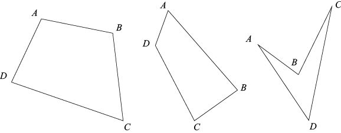
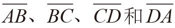
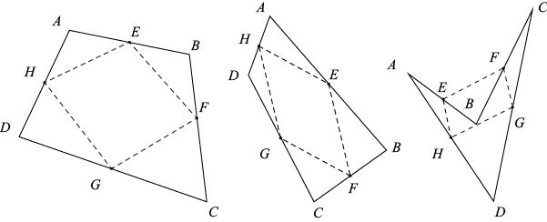
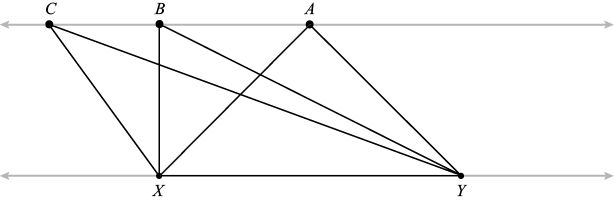
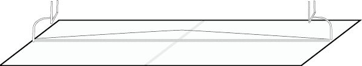

一定平行于
一定平行于 ，
， 一定与
一定与 平行。（此外，和的长度相同，与的长度也相同。）从上图就可以看出这些特点，不过大家最好自己动手画几幅图验证一下。
平行。（此外，和的长度相同，与的长度也相同。）从上图就可以看出这些特点，不过大家最好自己动手画几幅图验证一下。我先向大家介绍一个可以作为魔术表演素材的几何问题，请在一张纸上完成以下步骤：
第一步：画一个四边形。4条边不得交叉，并按顺时针方向将4个角分别标记为A、B、C和D（参见下图）。

第二步：把4条边

的中点分别标记为E、F、G和H。第三步：如下图所示，连接各边中点，构成一个新的四边形EFGH。

无论你相信与否，EFGH一定是平行四边形。换句话说，一定平行于，一定与平行。（此外，和的长度相同，与的长度也相同。）从上图就可以看出这些特点，不过大家最好自己动手画几幅图验证一下。
这样的意外发现在几何学中比比皆是。做出一些非常简单的假设，然后运用一些并不复杂的逻辑证明，往往就会得出一些非常完美的结果。我们做一个小测验，看看大家在几何方面的直觉能力怎么样。有的问题有非常直观的答案，但有的问题却有令人意想不到的答案（即使拥有一定的几何知识，看到这些答案时，你也会感到惊讶）。[shu籍 分.享 V信jnztxy]
问题1：一位农民准备修建周长为52英尺[1]的矩形篱笆墙。这个矩形的长和宽各是多少时，它的面积最大？
A）正方形（各边边长均为13英尺）。
B）长宽比接近于黄金比例1.618（比如，长16英尺，宽10英尺）。
C）尽可能地长（长和宽分别接近于26英尺和0英尺）。
D）以上篱笆围成的面积都是相同的。
问题2：观察下图中的两条灰色平行线，其中X和Y在下面那条直线上。要求在上方的那条直线上选择一点，使该点与X、Y构成的三角形周长最小。应选择哪个点？
A）点A（位于X和Y中点的正上方）。
B）点B（使B、X和Y构成直角三角形）。
C）尽可能地远离X和Y（如点C）。
D）位置无所谓，因为所有三角形的周长都相同。

问题3：上图中，要使三个点构成的三角形面积最大，应选择哪个点？
A）点A。
B）点B。
C）尽可能地远离X和Y。
D）位置无所谓，因为所有三角形的面积都相同。
问题4：橄榄球场上两个球门之间的距离是360英尺。一条长为360英尺的绳子两端分别系在两个球门柱根部。如果绳子增加1英尺，那么球场正中间处的绳子可以抬到多高？
A）离地面的高度不到1英寸[2]。
B）其高度正好可以让人从下面爬过去。
C）其高度正好可以让人从下面走过去。
D）其高度足以通过一辆卡车。

下面给出了这4个问题的答案。我认为前两个问题的答案十分直观，而后两个则会让大多数人大吃一惊。在本章的后半部分，我会对这些答案一一做出解释。
问题1答案：A。周长一定时，要使矩形面积最大，各条边的长度应该相等。因此，最佳选择是正方形。
问题2答案：A。选择位于X和Y中点正上方的点A，三点构成的三角形XAY的周长最小。
问题3答案：D。所有三角形的面积都相同。
问题4答案：D。球场正中间的绳子可以抬至离地面13英尺处，足够大多数卡车从下方通过。
借助简单的代数运算，就可以解释问题1的答案。如果矩形上下两条边的长度为b，左右两条边的长度为h，它的周长就是2b + 2h，也就是4条边的边长之和。面积表示由4条边围成的图形大小，为bh。（我们在后文中将详细讨论图形的面积。）由于周长必须是52英尺，因此2b + 2h = 52，也就是说：
b + h = 26
既然 h = 26 – b，那么我们希望得到的最大面积bh等于：
b (26 – h) = 26b – b2
b取何值才能使上面这个等式的值最大呢？利用本书第11章介绍的微积分知识，我们很容易就能找到答案。但是，利用第2章介绍的完全平方数，也能算出b的值。b的值有了之后，就可以算出矩形的面积是：
26b – b2 = 169 – ( b2 – 26b + 169) = 169 – (b – 13)2
当b = 13时，矩形的面积是169 – 02 = 169。当b≠13时，矩形的面积为：
169 – (某个不为0的数)2
从169中减去某个正数，得数肯定小于169。因此，当b = 13，h = 26 – b = 13时，矩形的面积最大。在问题1中，农民的篱笆周长是否为52英尺，这是一个无关紧要的条件，这也正是几何学令人惊讶的一个方面。我们可以借助相同的方法证明这样一个问题：要使周长为p的矩形面积最大，矩形的最佳形状应该是正方形，其各边边长均为p/4。
为了解释其他几个问题，我们需要先思考几个看似自相矛盾的研究成果，研究几何学的几个经典问题。三角形的内角和为什么是180°？勾股定理到底指什么？如何判断两个三角形的形状是否相同？三角形的形状是否相同，有什么重要意义？